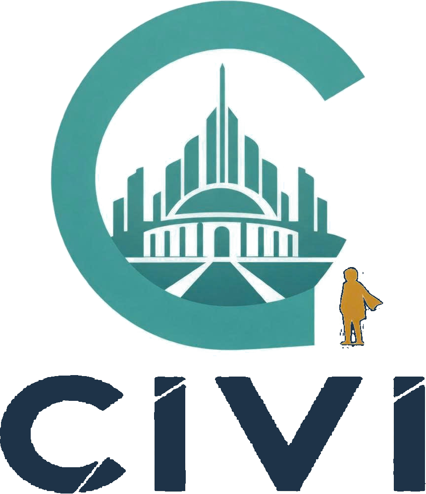

Game giải bí ẩn văn phòng hài hước về công bằng trong thời đại thuật toán
| Giải pháp | Loại | Làm tốt | Còn thiếu |
|---|---|---|---|
| Bài giảng HĐTN, tham vấn học đường | Trong trường | Kiến thức, hỗ trợ cá nhân, phát hiện sớm | Học sinh chủ yếu nghe, ít được thực hành quyết định |
| Friendly ATTAC | Game giáo dục (RCT, 216 HS) | Tăng tự tin và ý định giúp đỡ người bị bắt nạt | Không đổi được hành vi thật khi chỉ chơi, thiếu thảo luận |
| Bad News (ĐH Cambridge) | Game trình duyệt | >1 triệu lượt chơi; giảm 21% mức tin tin giả | Chủ đề tin giả, tiếng Anh, không phản chiếu riêng từng người |
| Papers, Please | Game thương mại | >5 triệu bản; lựa chọn đạo đức với giấy tờ | Không dành cho lớp học, không tiếng Việt |
Bạn là thực tập sinh IT ở Tầng 42 của một thành phố mái vòm. 3 chương · ~30 phút.
| Vòng 1 | Vòng 2 | Vì sao đổi | |
|---|---|---|---|
| Bối cảnh | Lớp 12, kỷ yếu | Thành phố ngụ ngôn | Học đường dễ thành bài giảng, trùng giải pháp có sẵn |
| Chủ đề | Bạn bè bỏ rơi nhau | Hệ thống bỏ sót người | Nâng lên tư duy hệ thống |
| Giọng | Trầm buồn | Hài ở trên, đau ở dưới | Đúng gu 15–22 tuổi |
| Sản phẩm | Kịch bản | 3 chương chơi được | Có bản thật để kiểm chứng |
| AI | Ghi nhớ lựa chọn | Soi lại người chơi + báo cáo lớp | Góp ý mentor: nỗi đau người trả tiền |
| Giữ | Lựa chọn vùng xám → hệ quả → góc nhìn → tư duy hệ thống · kênh trường học | ||
| Chỉ số | Game tự ghi (ẩn danh) | Ngoài game |
|---|---|---|
| Nhận diện người bị bỏ sót | Tìm đủ 3 dấu hiệu “có người ở” | Khảo sát trước/sau |
| Góc nhìn nhiều bên | Số người bị ảnh hưởng được chủ động hỏi | Giáo viên quan sát |
| Tìm bối cảnh trước khi kết luận | Thời gian xem hồ sơ trước khi đóng dấu | Tình huống mới |
| Tư duy hệ thống | Sửa quy trình hay chỉ cấp ngoại lệ | Thảo luận lớp |
| Thao tác đã tay | gõ mõ ↔ đóng dấu hồ sơ |
| Con số để khoe | công đức +1 ↔ “N người đã được đếm” |
| Mở bằng link | không cần cài |
| Tự giễu, bí ẩn | thực tập sinh + “Phân khu 0 người” |
| Gói | Giá (giả định, đang kiểm chứng) |
|---|---|
| Thử nghiệm ≤50 học viên | 1,5–3 triệu · miễn phí 3 tổ chức đầu |
| Hằng năm ~300 học viên | 12–18 triệu · −50% trường công |
| Kịch bản bổ sung | 3–5 triệu / đơn vị |
| Tài trợ suất miễn phí | 30–100 triệu / gói |
| Bản đầy đủ (năm 2) | 39–49 nghìn · tham chiếu Steam 39.000đ |
| Chi phí chính | N1 | N3 |
|---|---|---|
| Con người (nội dung) | 90 | 360 |
| Họa sĩ, âm thanh | 40 | 80 |
| Truyền thông + triển khai | 35 | 110 |
| AI | 2 | 10 |